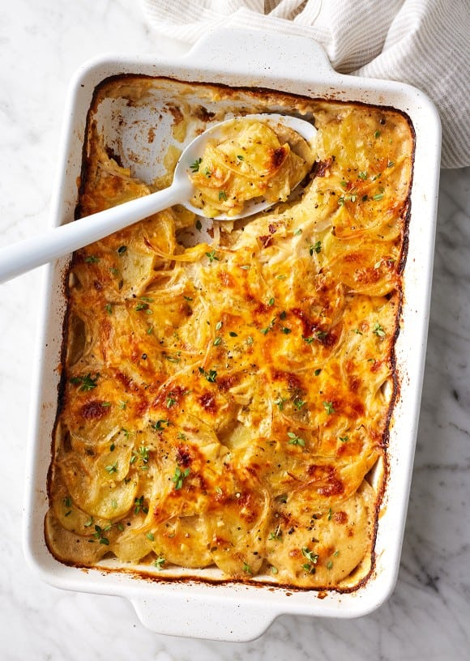

Scalloped Potatoes

Description
Finally—after lots of testing and tweaking—it’s here: my favorite scalloped potatoes recipe. It features tender potatoes baked in a creamy sauce with fresh thyme, onions, and cheddar cheese.
Ingredients
- 3 tbsp butter
- 1/4 cup flour
- 2 cups milk
- 1 cup veggie broth
- 4 garlic cloves, grated
- 1 tbsp fresh thyme, chopped
- 2 tsp sea salt
- 1/2 tsp black pepper
- 3 lbs Yukon Gold potatoes, thinly sliced
- 1/2 medium yellow onion, thinly sliced
- 1 1/2 cups grated cheddar
Steps
- Preheat oven to 400 , and grease a 9x13" casserole pan
- In a medium skillet, melt the butter over medium heat. Add the flour and whisk for 1 minute, then slowly add the milk followed by the vegetable broth, whisking continuously. Add the garlic, thyme, salt, and pepper and cook, whisking often, for 2 to 3 minutes, or until the sauce lightly coats the back of a spoon. Remove from the heat.
- Layer half of the potatoes at the bottom of the prepared baking dish. Top with half the onion, then half the sauce and 1 cup of the cheese. Repeat the layers with the remaining potatoes, onion, sauce, and ½ cup cheese.
- Cover and bake for 30 minutes, then uncover and bake for 35 to 40 minutes, or until the potatoes are tender and the cheese on top is browned. Let stand at room temperature for 20 minutes before serving.
Home